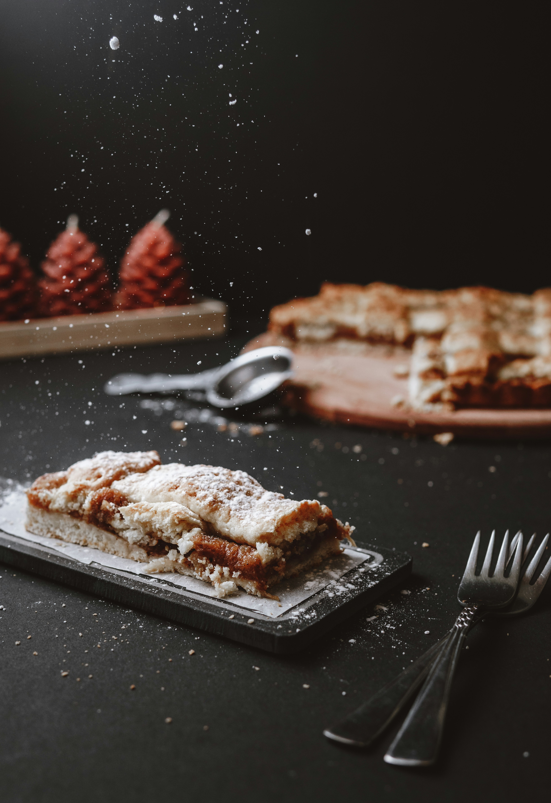
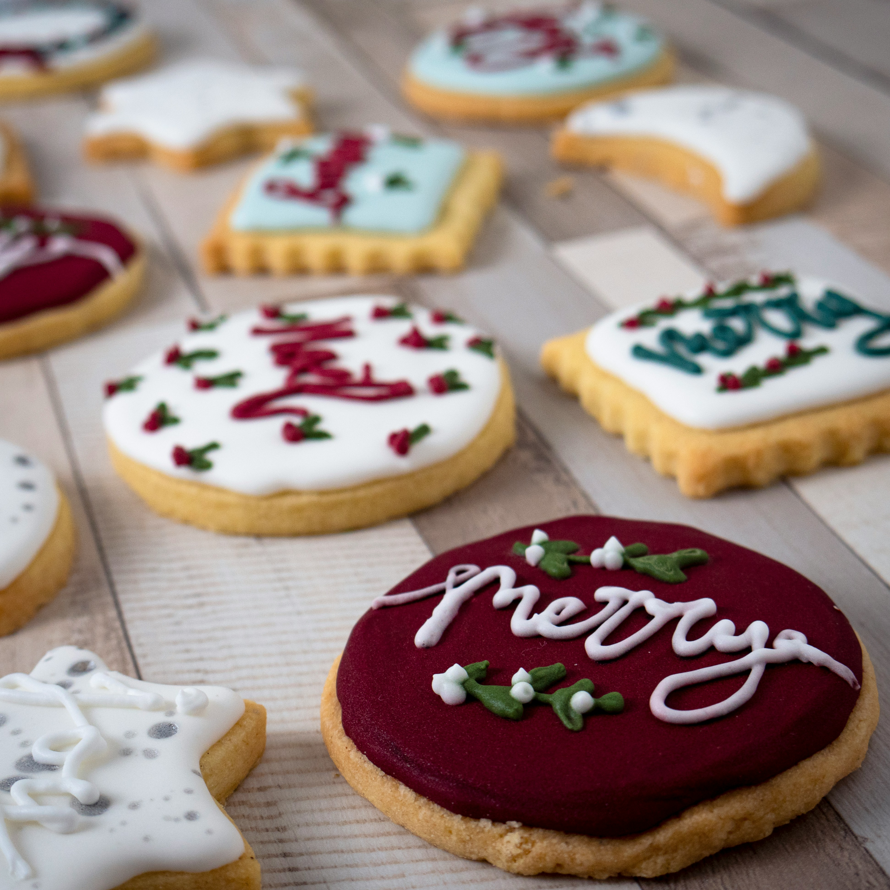
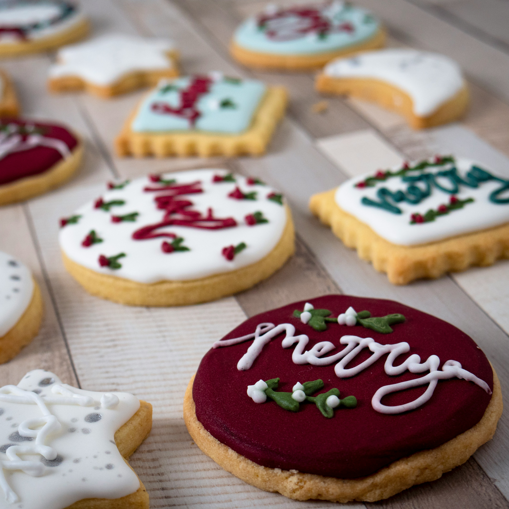
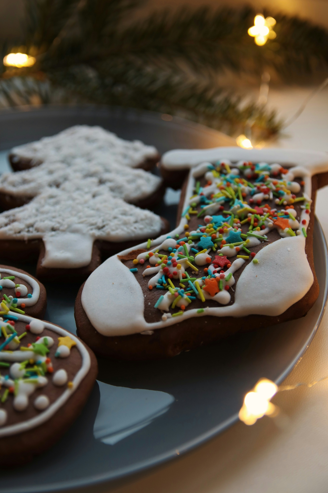
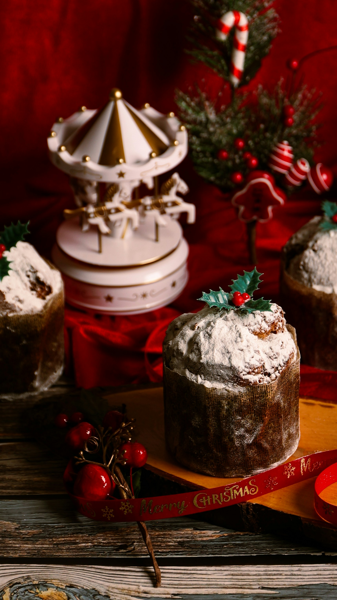
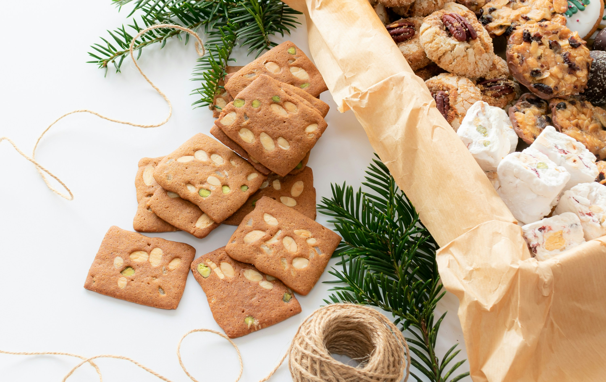
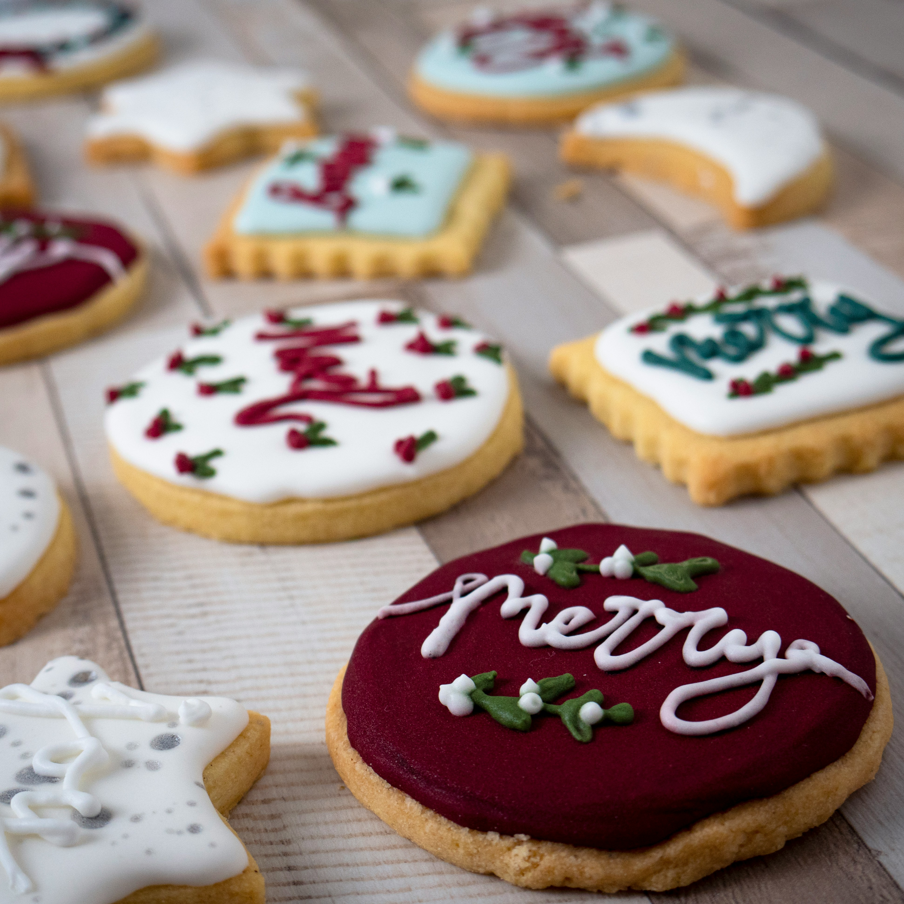

 





Prepare-se para uma jornada culinária inesquecível rumo à mesa de Natal. Este blog é o seu destino digital para tudo o que envolve a magia das festas e a riqueza da gastronomia natalina. Compartilhamos receitas e dicas práticas para transformar sua ceia em um evento memorável.

Chester assado com manteiga, alho e ervas frescas, garantindo uma carne macia, dourada e cheia de aroma. Durante o cozimento, é acompanhado de frutas como laranja e maçã, que liberam leves notas adocicadas e cítricas, trazendo equilíbrio e suavidade ao prato. Um destaque elegante e festivo para a ceia.
Pernil marinado por horas com alho, cebola, louro e um toque cítrico para realçar o sabor. Assado lentamente até ficar dourado por fora e macio por dentro, soltando do garfo. Acompanhado do próprio molho reduzido, aromático e cheio de sabor caseiro. Um clássico da ceia que traz aconchego e presença à mesa.
Tender assado e glaceado com mel e suco de abacaxi, formando uma camada dourada e levemente caramelizada. Os cravos aromatizam delicadamente, trazendo aquele perfume tradicional de Natal. A carne fica macia, suculenta e com um toque adocicado equilibrado. Um dos grandes queridinhos da ceia.
 1H20
1H20
 Serve 6 pessoas
Serve 6 pessoas
 Fácil
Fácil
Escolha uma categoria e explore a ceia.